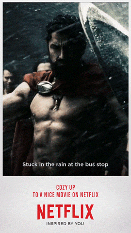
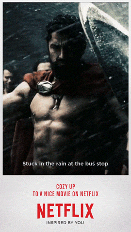
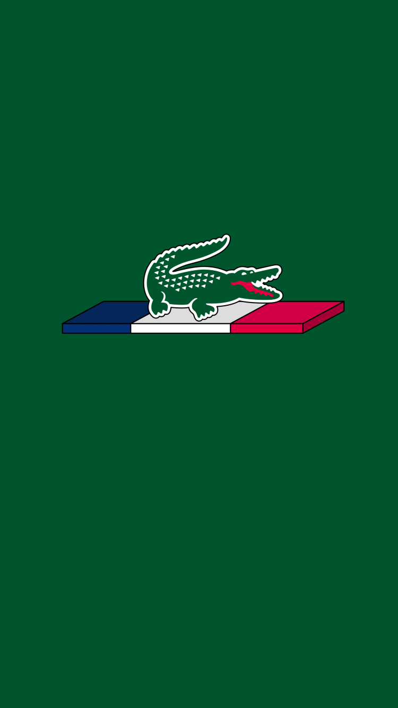
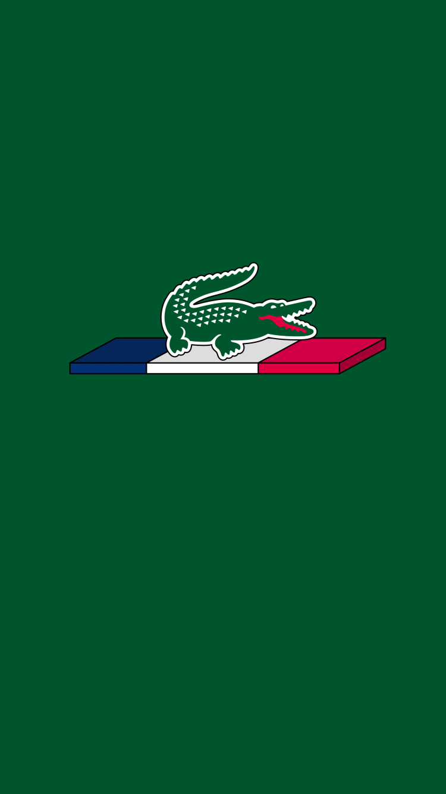
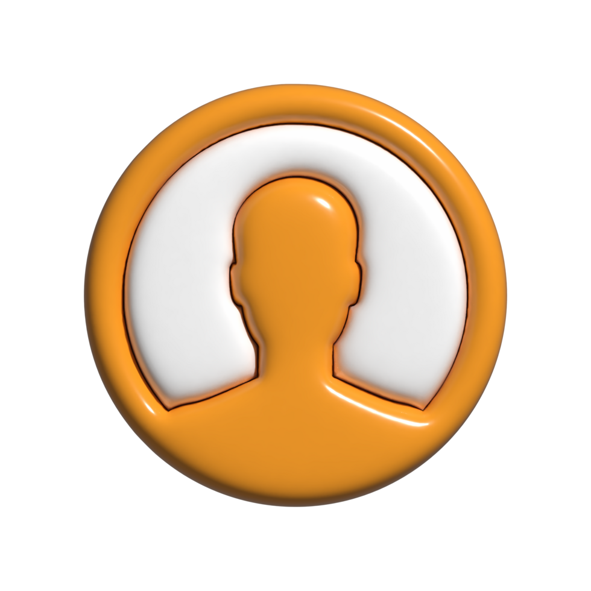
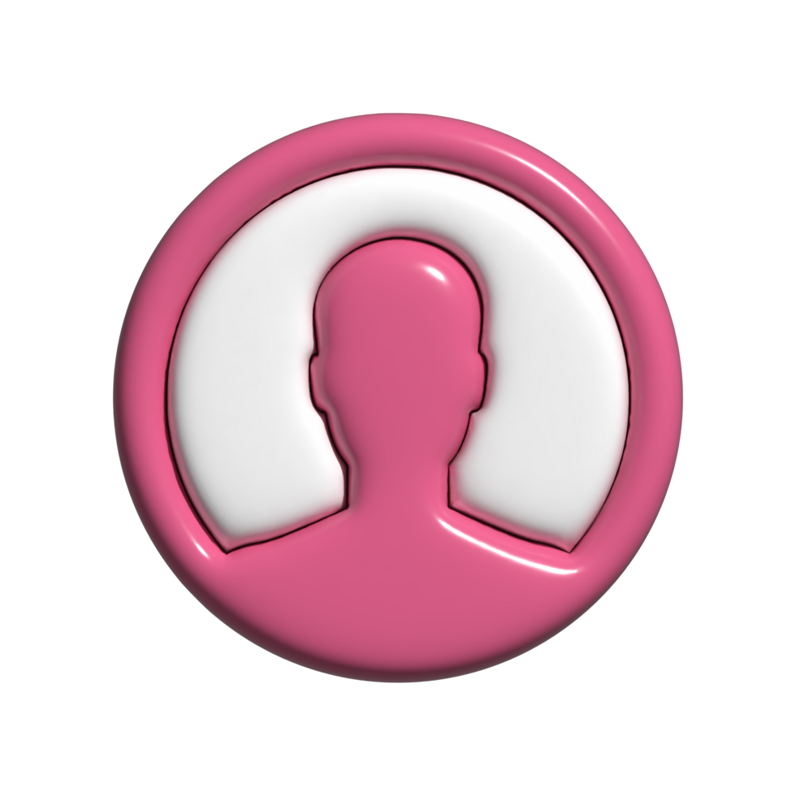
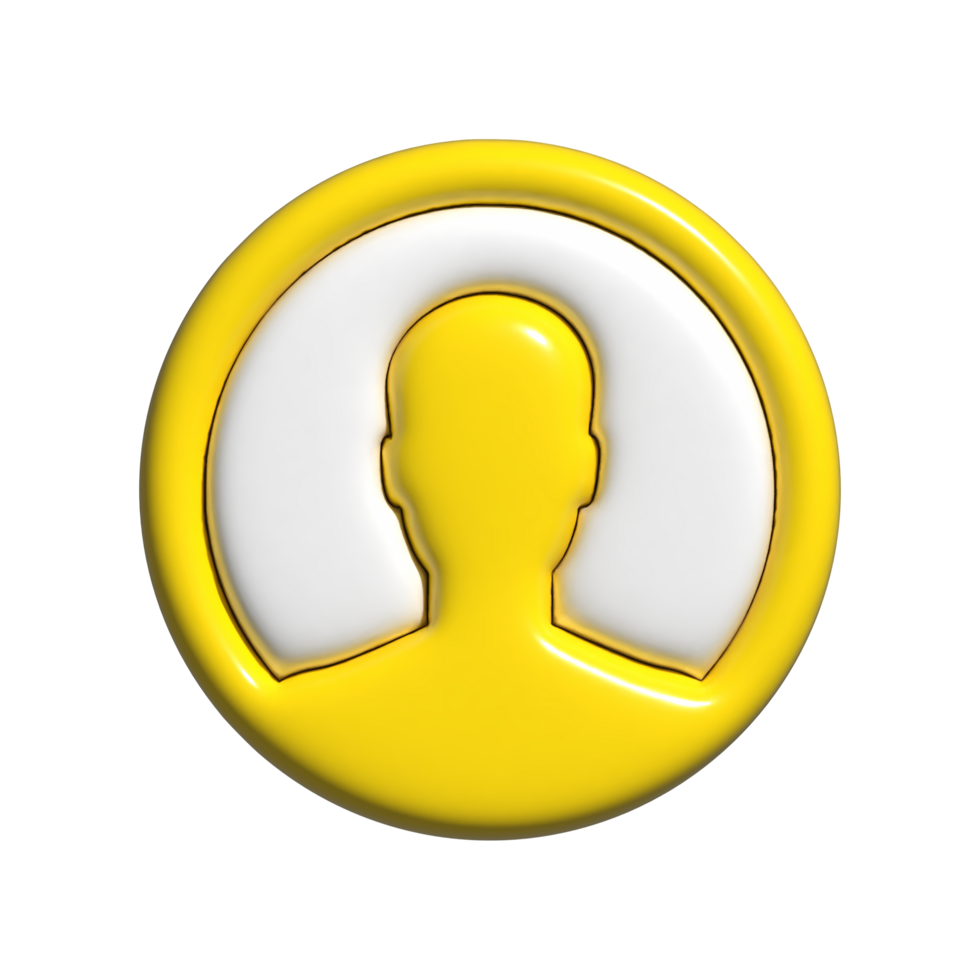
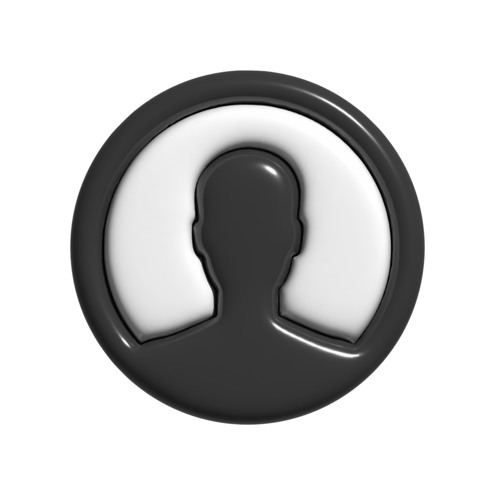
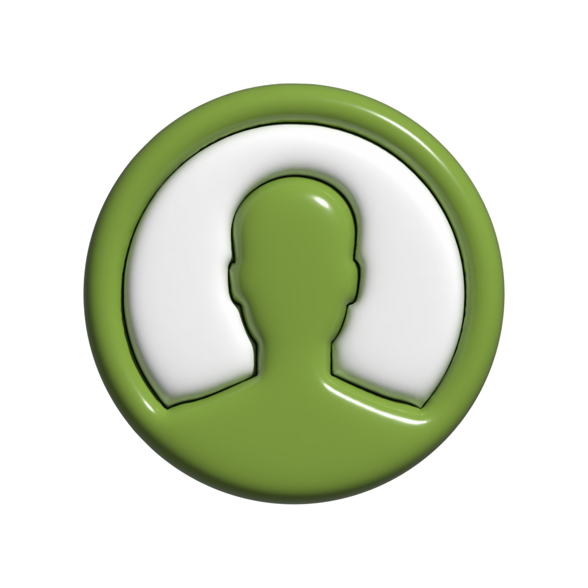

El origen de Virus: cómo comenzó una de las bandas más audaces del rock argentino
A comienzos de los años 80, mientras la Argentina aún vivía bajo la dictadura militar y el rock local transitaba un clima denso, introspectivo y muchas veces solemne, un grupo de amigos de La Plata decidió hacer algo completamente distinto. Ahí nace Virus, una banda que no solo rompió con los moldes musicales de su época, sino que también redefinió la estética y la energía del pop-rock nacional.
El germen: los hermanos Moura y la escena platense
Todo empieza con los hermanos Moura:
- Federico, el menor, estudiante de arquitectura, carismático, creativo y con una sensibilidad única.
- Julio y Marcelo, más orientados a lo instrumental y profundamente conectados con la movida artística de La Plata.
A finales de los 70, los Moura estaban involucrados en diversos proyectos musicales y teatrales, muchos vinculados al Teatro de La Plata y a colectivos experimentales como Marabunta. Ese ambiente era un hervidero de ideas: se mezclaba el humor absurdo con la estética plástica, la música con la danza, lo conceptual con lo festivo. Había una libertad creativa que contrastaba con el clima opresivo de la dictadura y que funcionaba como un refugio artístico.
En ese ecosistema surge la idea de armar una banda distinta, donde la actitud corporal, la puesta en escena y el sonido fueran tan importantes como las letras. Los Moura querían algo más que una banda tradicional: aspiraban a un proyecto que integrara moda, gestualidad, ironía, ritmo y teatralidad. Habían observado que en la escena local el rock solía tomarse demasiado en serio, y querían romper con esa solemnidad desde un lugar elegante y provocador.
Además, La Plata era una ciudad ideal para este experimento. Poseía una identidad cultural fuerte: una comunidad universitaria vibrante, artistas plásticos de avanzada, teatreros atrevidos, y una pequeña pero intensa escena musical. Los Moura crecieron dentro de ese caldo creativo, y eso moldeó su visión del arte como algo que debía incomodar, sorprender y seducir.
Federico, en particular, absorbió influencias de distintos mundos: el diseño, la arquitectura, la moda, la música disco, la new wave que empezaba a asomar en Europa, y la teatralidad que había explorado en proyectos escénicos. Esa mezcla lo convirtió en el frontman perfecto para una banda que todavía no existía, pero que ya tenía espíritu.
Así, entre ensayos improvisados en casas de amigos, tertulias nocturnas y discusiones estéticas que mezclaban humor y filosofía, fue tomando forma la idea de un grupo que no quería sonar como nadie más. Un proyecto que, sin saberlo aún, estaba por convertirse en uno de los movimientos más innovadores del rock argentino.
El punto de inflexión: la muerte de Federico Moura
Originalmente, la banda se llamó Duro, pero el proyecto quedó paralizado por un hecho trágico: en 1978 muere Federico Moura, el hermano mayor (no confundir con el futuro cantante, que también se llama Federico). Su partida fue un golpe devastador para la familia y para aquel primer intento de grupo, que todavía no tenía una identidad definida. Era un momento de búsquedas, de ensayos dispersos y de ideas que recién estaban tomando forma.
La muerte de Federico marcó un antes y un después. No solo dejó un vacío emocional enorme, sino que también funcionó como una especie de llamado interno para los otros hermanos, especialmente para Julio, Marcelo y el Federico cantante, que hasta ese momento no tenía un rol central en el proyecto. Ese dolor se transformó con el tiempo en una fuerza creativa: una necesidad de dar sentido a la ausencia a través del arte.
Con los años, los Moura recordaron que ese primer Federico había sido uno de los más entusiastas con la idea de que ellos formaran una banda. Retomar el proyecto fue, en cierto modo, continuar un deseo que él había dejado instalado. Esa sensación hizo que el grupo renaciera con una convicción más firme, una identidad más clara y una intención de arriesgarse sin medias tintas. Ya no era simplemente un experimento musical: era un homenaje íntimo, una forma de transformar la pérdida en algo vivo, vibrante y creativo.
Nace Virus (1980)
El verdadero inicio de Virus se concreta en 1980, con una formación que combinaba a los hermanos Moura con músicos amigos de la escena platense:
- Federico Moura – Voz
- Julio Moura – Guitarra
- Marcelo Moura – Teclados
- Ricardo Serra – Guitarra
- Mario Serra – Batería
- Enrique Mugetti – Bajo
El nombre Virus surgió como un concepto provocador para la época. Querían contagiar una nueva forma de sentir el rock: más sensual, más bailable, más irónica, más libre. La elección no fue casual; buscaba incomodar a un ambiente musical dominado por la gravedad posdictadura y las temáticas introspectivas. Llamarse Virus en 1980 era casi un gesto punk: implicaba asumir que su música se propagaría por encima de las resistencias, infiltrándose en fiestas, boliches y escenarios con una energía que descolocaba a propios y extraños.
Además, el nombre reflejaba la filosofía del grupo: ser una irrupción fresca, contagiosa, capaz de transformar el ánimo del público desde el cuerpo, no solo desde la cabeza. Era un símbolo de renovación estética, de desobediencia elegante, y de una apuesta por la diversión en un contexto social cargado de tensiones. Con ese nombre, la banda dejaba claro desde el principio que no venían a seguir las reglas del rock, sino a infectarlo con una manera completamente nueva de vivirlo.
El primer impacto: Bailar o no bailar
En 1981 y 1982, Virus empieza a presentarse en boliches y teatros. Sus primeros shows generan reacciones divididas:
- Unos los aman por su frescura.
- Otros los rechazan por “superficiales” o “demasiado frívolos” frente al rock politizado del momento.
Federico salía al escenario con ropa ajustada, movimientos sensuales, ironía, glamour y una manera de cantar que no se parecía a nada. Era una ruptura total con la solemnidad del rock nacional tradicional.
En cada presentación se veía claramente la separación entre quienes se dejaban llevar por el ritmo y quienes se mantenían rígidos, sosteniendo la idea de que “el rock no se baila”. Esa tensión entre moverse o quedarse quieto comenzó a convertirse en una marca distintiva de los primeros recitales: Virus estaba proponiendo otra forma de habitar el escenario y otra manera de sentir la música.
Wadu-Wadu (1981): el debut discográfico
En 1981 lanzan Wadu-Wadu, un disco adelantado para la época, con influencias de new wave, synth-pop y funk. Temas como “Wadu Wadu” o “Soy moderno, no fumo” mostraban un humor ácido, juegos de palabras, y un sonido bailable que contrastaba con lo que dominaba las radios. Aunque las ventas iniciales fueron modestas, el álbum sembró lo que después sería el estilo definitivo de Virus: moderno, festivo, inteligente y provocador.
¿Qué caracterizó a Virus desde el inicio?
- Estética vanguardista Vestuario, peinados, luces, movimientos y diseño visual que rompían con el estándar rockero.
- Letras irónicas y sofisticadas Humor elegante, referencias culturales, dobles sentidos y crítica social encubierta.
- Sonido pop-rock bailable Synths, ritmos funk, guitarras limpias y energía nocturna, influenciados por la new wave y el post-punk internacional.
- Energía escénica única La presencia de Federico Moura, magnética, sensual y desafiante, fue uno de los elementos centrales que convirtió a Virus en algo irrepetible.
 

 

PUBLICIDAD PAGA
¡Así nació VIRUS y marcó un antes y un después!
-

marianolopez87@gmail.com
Interesante la información del blog, explica todo de manera clara y sencilla.Hace 2 horas -

carla.rodriguez21@hotmail.com
El contenido está bien organizado; me resultó fácil encontrar lo que buscaba.Hace 1 semana -

juanperez.tech93@yahoo.com
Buen artículo. Me ayudó a entender mejor el tema sin dar demasiadas vueltas.Hace 3 dias -

sofiagonzalez_14@outlook.com
Me gustó el estilo del blog, es directo y no se hace pesado de leer. Me gusta :).Hace 3 semanas -

andres.martinezxx02@gmail.com
El blog está bien, aunque podría tener más ejemplos, pero en general es útil.Hace 12 horas